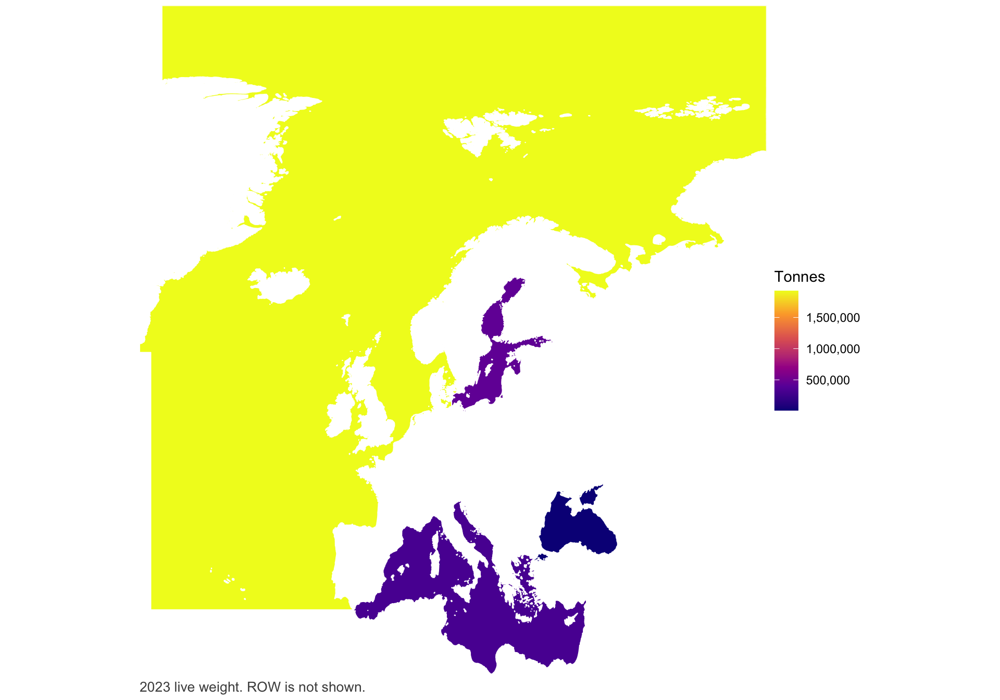
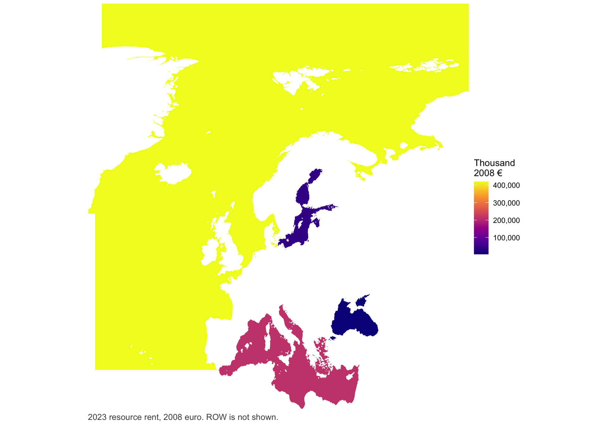
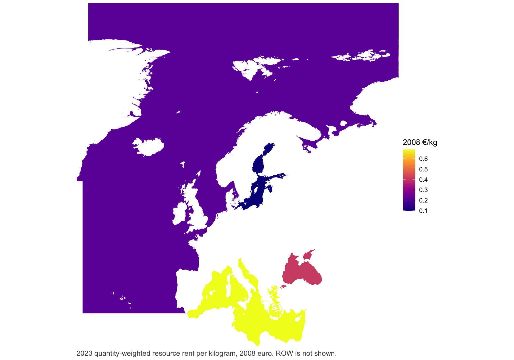
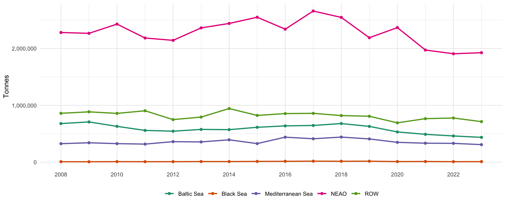
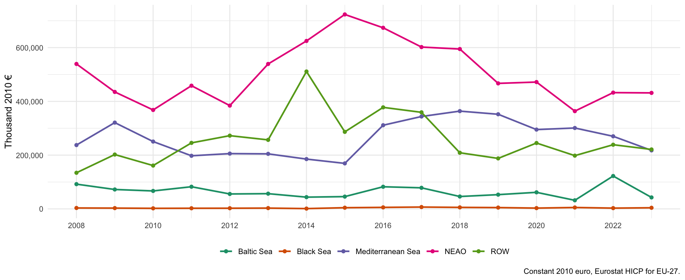

2023 landings
3,394,299 t
2023 resource rent, 2008 euro
894 million
ROW share of 2023 tonnage
21%
| Landings (tonnes) | Resource rent (thousand nominal €) | Resource rent (thousand 2008 €) | Price (2008 €/kg) | Real change (%) | |
|---|---|---|---|---|---|
| NEAO | 1,925,813.54 | 586,131.21 | 420,374.53 | 0.22 | −0.26 |
| Baltic Sea | 436,671.93 | 57,923.79 | 41,543.06 | 0.10 | −65.14 |
| Mediterranean Sea | 308,721.77 | 295,655.86 | 212,045.00 | 0.69 | −19.40 |
| Black Sea | 9,960.60 | 5,666.51 | 4,064.03 | 0.41 | 44.70 |
| ROW | 713,130.67 | 300,489.70 | 215,511.84 | 0.30 | −7.40 |
| Total | 3,394,298.51 | 1,245,867.07 | 893,538.47 | 0.26 | −14.02 |
| Real change is the year-on-year change in 2008 euro. Blank in 2008. 2024 is excluded because expenditure was not reported. | |||||
| Landings (tonnes) | Resource rent (thousand nominal €) | Resource rent (thousand 2008 €) | Price (2008 €/kg) | Real change (%) | |
|---|---|---|---|---|---|
| NEAO | 1,907,664.19 | 552,493.52 | 421,461.14 | 0.22 | 18.94 |
| Baltic Sea | 461,346.25 | 156,240.44 | 119,185.60 | 0.26 | 282.97 |
| Mediterranean Sea | 331,221.45 | 344,877.19 | 263,084.23 | 0.79 | −10.26 |
| Black Sea | 8,721.83 | 3,681.88 | 2,808.67 | 0.32 | −45.13 |
| ROW | 777,212.97 | 305,101.38 | 232,741.87 | 0.30 | 20.52 |
| Total | 3,486,166.68 | 1,362,394.41 | 1,039,281.51 | 0.30 | 18.52 |
| Real change is the year-on-year change in 2008 euro. Blank in 2008. 2024 is excluded because expenditure was not reported. | |||||
| Landings (tonnes) | Resource rent (thousand nominal €) | Resource rent (thousand 2008 €) | Price (2008 €/kg) | Real change (%) | |
|---|---|---|---|---|---|
| NEAO | 1,973,119.92 | 425,402.95 | 354,333.06 | 0.18 | −23.00 |
| Baltic Sea | 489,984.07 | 37,363.53 | 31,121.39 | 0.06 | −48.27 |
| Mediterranean Sea | 333,978.47 | 351,977.27 | 293,174.23 | 0.88 | 1.98 |
| Black Sea | 12,046.23 | 6,145.66 | 5,118.94 | 0.42 | 77.73 |
| ROW | 765,637.92 | 231,852.18 | 193,117.83 | 0.25 | −19.13 |
| Total | 3,574,766.61 | 1,052,741.59 | 876,865.44 | 0.25 | −16.45 |
| Real change is the year-on-year change in 2008 euro. Blank in 2008. 2024 is excluded because expenditure was not reported. | |||||
| Landings (tonnes) | Resource rent (thousand nominal €) | Resource rent (thousand 2008 €) | Price (2008 €/kg) | Real change (%) | |
|---|---|---|---|---|---|
| NEAO | 2,367,508.47 | 536,950.44 | 460,185.21 | 0.19 | 1.15 |
| Baltic Sea | 532,347.93 | 70,195.28 | 60,159.80 | 0.11 | 16.34 |
| Mediterranean Sea | 348,856.47 | 335,424.04 | 287,470.07 | 0.82 | −16.17 |
| Black Sea | 10,690.38 | 3,360.63 | 2,880.18 | 0.27 | −39.68 |
| ROW | 692,413.99 | 278,618.36 | 238,785.63 | 0.34 | 30.38 |
| Total | 3,951,817.24 | 1,224,548.75 | 1,049,480.89 | 0.27 | 1.16 |
| Real change is the year-on-year change in 2008 euro. Blank in 2008. 2024 is excluded because expenditure was not reported. | |||||
| Landings (tonnes) | Resource rent (thousand nominal €) | Resource rent (thousand 2008 €) | Price (2008 €/kg) | Real change (%) | |
|---|---|---|---|---|---|
| NEAO | 2,189,615.14 | 527,216.07 | 454,939.69 | 0.21 | −21.49 |
| Baltic Sea | 629,662.90 | 59,927.15 | 51,711.70 | 0.08 | 14.96 |
| Mediterranean Sea | 408,992.58 | 397,407.23 | 342,926.42 | 0.84 | −3.24 |
| Black Sea | 17,417.94 | 5,533.62 | 4,775.01 | 0.27 | −12.55 |
| ROW | 807,887.52 | 212,236.90 | 183,141.21 | 0.23 | −10.01 |
| Total | 4,053,576.07 | 1,202,320.98 | 1,037,494.03 | 0.26 | −12.66 |
| Real change is the year-on-year change in 2008 euro. Blank in 2008. 2024 is excluded because expenditure was not reported. | |||||
| Landings (tonnes) | Resource rent (thousand nominal €) | Resource rent (thousand 2008 €) | Price (2008 €/kg) | Real change (%) | |
|---|---|---|---|---|---|
| NEAO | 2,547,083.01 | 662,132.10 | 579,469.47 | 0.23 | −1.22 |
| Baltic Sea | 679,442.38 | 51,398.49 | 44,981.74 | 0.07 | −41.02 |
| Mediterranean Sea | 441,685.17 | 404,960.66 | 354,404.11 | 0.80 | 5.82 |
| Black Sea | 16,289.04 | 6,239.07 | 5,460.17 | 0.34 | −18.15 |
| ROW | 819,966.94 | 232,556.30 | 203,523.25 | 0.25 | −41.86 |
| Total | 4,504,466.54 | 1,357,286.61 | 1,187,838.74 | 0.26 | −12.30 |
| Real change is the year-on-year change in 2008 euro. Blank in 2008. 2024 is excluded because expenditure was not reported. | |||||
| Landings (tonnes) | Resource rent (thousand nominal €) | Resource rent (thousand 2008 €) | Price (2008 €/kg) | Real change (%) | |
|---|---|---|---|---|---|
| NEAO | 2,659,297.41 | 658,458.57 | 586,619.66 | 0.22 | −10.64 |
| Baltic Sea | 645,918.87 | 85,599.99 | 76,260.89 | 0.12 | −4.86 |
| Mediterranean Sea | 411,962.33 | 375,909.79 | 334,897.42 | 0.81 | 10.42 |
| Black Sea | 18,059.94 | 7,487.80 | 6,670.86 | 0.37 | 21.73 |
| ROW | 859,208.43 | 392,923.04 | 350,054.50 | 0.41 | −4.88 |
| Total | 4,594,446.98 | 1,520,379.19 | 1,354,503.34 | 0.29 | −4.17 |
| Real change is the year-on-year change in 2008 euro. Blank in 2008. 2024 is excluded because expenditure was not reported. | |||||
| Landings (tonnes) | Resource rent (thousand nominal €) | Resource rent (thousand 2008 €) | Price (2008 €/kg) | Real change (%) | |
|---|---|---|---|---|---|
| NEAO | 2,340,107.55 | 725,562.87 | 656,468.55 | 0.28 | −6.86 |
| Baltic Sea | 638,470.72 | 88,597.61 | 80,160.58 | 0.13 | 80.00 |
| Mediterranean Sea | 439,990.83 | 335,213.39 | 303,291.49 | 0.69 | 83.86 |
| Black Sea | 15,396.90 | 6,056.61 | 5,479.85 | 0.36 | 26.72 |
| ROW | 854,938.04 | 406,768.83 | 368,032.81 | 0.43 | 31.80 |
| Total | 4,288,904.05 | 1,562,199.31 | 1,413,433.28 | 0.33 | 17.99 |
| Real change is the year-on-year change in 2008 euro. Blank in 2008. 2024 is excluded because expenditure was not reported. | |||||
| Landings (tonnes) | Resource rent (thousand nominal €) | Resource rent (thousand 2008 €) | Price (2008 €/kg) | Real change (%) | |
|---|---|---|---|---|---|
| NEAO | 2,550,010.83 | 777,627.18 | 704,841.28 | 0.28 | 15.78 |
| Baltic Sea | 613,663.49 | 49,132.63 | 44,533.82 | 0.07 | 4.53 |
| Mediterranean Sea | 326,901.45 | 181,992.85 | 164,958.32 | 0.50 | −8.64 |
| Black Sea | 13,591.34 | 4,770.78 | 4,324.24 | 0.32 | 302.53 |
| ROW | 822,471.67 | 308,065.45 | 279,230.52 | 0.34 | −43.93 |
| Total | 4,326,638.79 | 1,321,588.89 | 1,197,888.17 | 0.28 | −10.00 |
| Real change is the year-on-year change in 2008 euro. Blank in 2008. 2024 is excluded because expenditure was not reported. | |||||
| Landings (tonnes) | Resource rent (thousand nominal €) | Resource rent (thousand 2008 €) | Price (2008 €/kg) | Real change (%) | |
|---|---|---|---|---|---|
| NEAO | 2,440,566.73 | 670,891.11 | 608,765.34 | 0.25 | 15.88 |
| Baltic Sea | 572,196.17 | 46,951.64 | 42,603.83 | 0.07 | −22.82 |
| Mediterranean Sea | 393,425.45 | 198,988.51 | 180,561.80 | 0.46 | −9.51 |
| Black Sea | 10,763.96 | 1,183.89 | 1,074.26 | 0.10 | −62.86 |
| ROW | 943,829.10 | 548,801.62 | 497,981.57 | 0.53 | 99.07 |
| Total | 4,360,781.41 | 1,466,816.77 | 1,330,986.81 | 0.31 | 28.83 |
| Real change is the year-on-year change in 2008 euro. Blank in 2008. 2024 is excluded because expenditure was not reported. | |||||
| Landings (tonnes) | Resource rent (thousand nominal €) | Resource rent (thousand 2008 €) | Price (2008 €/kg) | Real change (%) | |
|---|---|---|---|---|---|
| NEAO | 2,362,451.41 | 576,625.55 | 525,332.60 | 0.22 | 40.30 |
| Baltic Sea | 576,432.32 | 60,589.21 | 55,199.58 | 0.10 | 2.01 |
| Mediterranean Sea | 356,414.30 | 219,026.96 | 199,543.71 | 0.56 | −0.44 |
| Black Sea | 11,098.92 | 3,174.97 | 2,892.55 | 0.26 | 19.16 |
| ROW | 793,371.97 | 274,576.77 | 250,152.16 | 0.32 | −5.77 |
| Total | 4,099,768.92 | 1,133,993.47 | 1,033,120.59 | 0.25 | 15.19 |
| Real change is the year-on-year change in 2008 euro. Blank in 2008. 2024 is excluded because expenditure was not reported. | |||||
| Landings (tonnes) | Resource rent (thousand nominal €) | Resource rent (thousand 2008 €) | Price (2008 €/kg) | Real change (%) | |
|---|---|---|---|---|---|
| NEAO | 2,143,412.14 | 405,613.69 | 374,425.35 | 0.17 | −16.16 |
| Baltic Sea | 545,045.55 | 58,621.76 | 54,114.23 | 0.10 | −32.65 |
| Mediterranean Sea | 361,185.49 | 217,116.96 | 200,422.46 | 0.55 | 4.11 |
| Black Sea | 8,958.42 | 2,629.73 | 2,427.52 | 0.27 | 5.58 |
| ROW | 748,975.19 | 287,578.02 | 265,465.65 | 0.35 | 10.94 |
| Total | 3,807,576.79 | 971,560.16 | 896,855.21 | 0.24 | −6.68 |
| Real change is the year-on-year change in 2008 euro. Blank in 2008. 2024 is excluded because expenditure was not reported. | |||||
| Landings (tonnes) | Resource rent (thousand nominal €) | Resource rent (thousand 2008 €) | Price (2008 €/kg) | Real change (%) | |
|---|---|---|---|---|---|
| NEAO | 2,184,622.53 | 471,477.56 | 446,595.53 | 0.20 | 24.53 |
| Baltic Sea | 558,830.66 | 84,819.53 | 80,343.22 | 0.14 | 23.45 |
| Mediterranean Sea | 317,958.74 | 203,242.98 | 192,516.92 | 0.61 | −21.13 |
| Black Sea | 8,674.38 | 2,427.31 | 2,299.21 | 0.27 | 13.63 |
| ROW | 904,520.57 | 252,617.33 | 239,285.56 | 0.26 | 52.34 |
| Total | 3,974,606.87 | 1,014,584.71 | 961,040.43 | 0.24 | 16.23 |
| Real change is the year-on-year change in 2008 euro. Blank in 2008. 2024 is excluded because expenditure was not reported. | |||||
| Landings (tonnes) | Resource rent (thousand nominal €) | Resource rent (thousand 2008 €) | Price (2008 €/kg) | Real change (%) | |
|---|---|---|---|---|---|
| NEAO | 2,429,074.15 | 368,081.41 | 358,625.16 | 0.15 | −15.42 |
| Baltic Sea | 630,119.43 | 66,797.11 | 65,081.05 | 0.10 | −7.52 |
| Mediterranean Sea | 326,310.55 | 250,514.72 | 244,078.84 | 0.75 | −21.97 |
| Black Sea | 9,883.96 | 2,076.80 | 2,023.44 | 0.20 | −29.53 |
| ROW | 858,275.55 | 161,211.95 | 157,070.32 | 0.18 | −20.27 |
| Total | 4,253,663.65 | 848,681.99 | 826,878.81 | 0.19 | −17.89 |
| Real change is the year-on-year change in 2008 euro. Blank in 2008. 2024 is excluded because expenditure was not reported. | |||||
| Landings (tonnes) | Resource rent (thousand nominal €) | Resource rent (thousand 2008 €) | Price (2008 €/kg) | Real change (%) | |
|---|---|---|---|---|---|
| NEAO | 2,266,685.30 | 427,314.86 | 423,993.64 | 0.19 | −19.26 |
| Baltic Sea | 708,010.98 | 70,922.37 | 70,371.14 | 0.10 | −21.57 |
| Mediterranean Sea | 341,314.54 | 315,235.10 | 312,785.00 | 0.92 | 35.21 |
| Black Sea | 7,657.15 | 2,893.83 | 2,871.34 | 0.37 | −14.01 |
| ROW | 885,665.46 | 198,557.72 | 197,014.47 | 0.22 | 50.50 |
| Total | 4,209,333.43 | 1,014,923.89 | 1,007,035.59 | 0.24 | 2.71 |
| Real change is the year-on-year change in 2008 euro. Blank in 2008. 2024 is excluded because expenditure was not reported. | |||||
| Landings (tonnes) | Resource rent (thousand nominal €) | Resource rent (thousand 2008 €) | Price (2008 €/kg) | Real change (%) | |
|---|---|---|---|---|---|
| NEAO | 2,281,345.43 | 525,145.91 | 525,145.91 | 0.23 | NA |
| Baltic Sea | 679,048.71 | 89,721.31 | 89,721.31 | 0.13 | NA |
| Mediterranean Sea | 325,358.26 | 231,338.75 | 231,338.75 | 0.71 | NA |
| Black Sea | 8,082.67 | 3,339.17 | 3,339.17 | 0.41 | NA |
| ROW | 859,794.22 | 130,910.50 | 130,910.50 | 0.15 | NA |
| Total | 4,153,629.29 | 980,455.65 | 980,455.65 | 0.24 | NA |
| Real change is the year-on-year change in 2008 euro. Blank in 2008. 2024 is excluded because expenditure was not reported. | |||||
Rest of world is off the map. ROW was 21 percent of 2023 tonnage. Those landings were taken by EU fleets outside the four pan-European sea regions and cannot appear on a European choropleth. They remain in the tables and in the time series.
Monetary values are 2008 euro. Resource rent is deflated with Eurostat HICP for EU-27. The allocation itself stays in nominal euro. Real change is the year-on-year change in 2008 euro. The base year is the first year of the panel and can be switched in one line if the client prefers 2023 constant prices.
Use table of Eq. 2: sea region by Member State of landing. This is the compact summary without fish type. ROW is rest of world.
| Sea region | Country | Landings (tonnes) | Resource rent (thousand nominal €) | Resource rent (thousand 2008 €) | Price (2008 €/kg) | Real change (%) |
|---|---|---|---|---|---|---|
| NEAO | Belgium | 17,437.60 | 11,124.32 | 7,978.39 | 0.46 | 54.60 |
| NEAO | Denmark | 461,800.99 | 37,469.91 | 26,873.50 | 0.06 | −10.13 |
| NEAO | France | 355,094.10 | 109,043.99 | 78,206.58 | 0.22 | −21.97 |
| NEAO | Germany | 130,800.26 | 13,543.05 | 9,713.11 | 0.07 | −53.45 |
| NEAO | Ireland | 186,339.46 | 118,857.05 | 85,244.53 | 0.46 | −5.90 |
| NEAO | Lithuania | 40,252.51 | 6,576.90 | 4,716.97 | 0.12 | 441.33 |
| NEAO | Netherlands | 261,039.59 | 68,490.98 | 49,121.87 | 0.19 | 61.11 |
| NEAO | Poland | 19,240.11 | 3,018.46 | 2,164.85 | 0.11 | 145.24 |
| NEAO | Portugal | 135,511.10 | 74,681.37 | 53,561.63 | 0.40 | −24.25 |
| NEAO | Spain | 250,735.54 | 133,790.79 | 95,955.04 | 0.38 | 41.01 |
| NEAO | Sweden | 67,562.28 | 9,534.38 | 6,838.07 | 0.10 | 83.86 |
| Baltic Sea | Denmark | 30,170.18 | 2,302.94 | 1,651.67 | 0.05 | −24.95 |
| Baltic Sea | Estonia | 57,490.78 | 8,865.84 | 6,358.60 | 0.11 | 524.66 |
| Baltic Sea | Finland | 89,671.41 | 1,778.27 | 1,275.38 | 0.01 | −98.66 |
| Baltic Sea | Germany | 14,739.62 | 1,315.84 | 943.72 | 0.06 | −13.48 |
| Baltic Sea | Latvia | 61,446.19 | 14,262.03 | 10,228.75 | 0.17 | 58.62 |
| Baltic Sea | Lithuania | 13,015.78 | 1,396.14 | 1,001.31 | 0.08 | 205.43 |
| Baltic Sea | Poland | 95,385.76 | 15,854.34 | 11,370.77 | 0.12 | 63.19 |
| Baltic Sea | Sweden | 74,752.22 | 12,148.39 | 8,712.85 | 0.12 | 45.12 |
| Mediterranean Sea | Croatia | 55,217.14 | 65,894.38 | 47,259.59 | 0.86 | −3.69 |
| Mediterranean Sea | Cyprus | 1,190.71 | 2,744.52 | 1,968.37 | 1.65 | 151.76 |
| Mediterranean Sea | France | 19,358.29 | 34,319.70 | 24,614.16 | 1.27 | −16.24 |
| Mediterranean Sea | Greece | 60,217.15 | 48,599.24 | 34,855.48 | 0.58 | 24.70 |
| Mediterranean Sea | Italy | 116,351.46 | 72,500.28 | 51,997.35 | 0.45 | −57.11 |
| Mediterranean Sea | Malta | 2,259.17 | 6,340.52 | 4,547.43 | 2.01 | −35.63 |
| Mediterranean Sea | Portugal | 50.31 | 35.57 | 25.51 | 0.51 | −60.98 |
| Mediterranean Sea | Slovenia | 107.51 | 2,256.11 | 1,618.08 | 15.05 | −48.17 |
| Mediterranean Sea | Spain | 53,970.03 | 62,965.54 | 45,159.02 | 0.84 | 85.01 |
| Black Sea | Bulgaria | 6,665.13 | 3,044.85 | 2,183.77 | 0.33 | 52.05 |
| Black Sea | Romania | 3,295.47 | 2,621.66 | 1,880.26 | 0.57 | 37.00 |
| ROW | Denmark | 2,915.70 | 96.60 | 69.28 | 0.02 | −44.29 |
| ROW | France | 102,600.03 | 128,691.75 | 92,297.99 | 0.90 | 32.50 |
| ROW | Germany | 19,898.67 | 1,146.83 | 822.51 | 0.04 | −80.33 |
| ROW | Italy | 4,376.71 | 3,545.66 | 2,542.96 | 0.58 | −41.70 |
| ROW | Lithuania | 47,028.34 | 7,684.01 | 5,510.99 | 0.12 | 56.72 |
| ROW | Malta | 6.75 | 19.50 | 13.98 | 2.07 | −86.12 |
| ROW | Poland | 46,219.26 | 6,185.13 | 4,435.99 | 0.10 | −25.39 |
| ROW | Portugal | 29,584.78 | 16,094.90 | 11,543.30 | 0.39 | −53.67 |
| ROW | Spain | 460,500.43 | 137,025.32 | 98,274.85 | 0.21 | −18.06 |
| Total | 3,394,298.51 | 1,245,867.07 | 893,538.47 | 0.26 | −14.02 | |
| Sea region by landing country. Country is the STECF Member State of landing (Eq. 2). | ||||||
| Sea region | Country | Landings (tonnes) | Resource rent (thousand nominal €) | Resource rent (thousand 2008 €) | Price (2008 €/kg) | Real change (%) |
|---|---|---|---|---|---|---|
| NEAO | Belgium | 18,322.16 | 6,765.10 | 5,160.65 | 0.28 | 242.93 |
| NEAO | Denmark | 424,946.90 | 39,199.52 | 29,902.75 | 0.07 | −32.15 |
| NEAO | France | 389,058.21 | 131,382.71 | 100,223.27 | 0.26 | 22.13 |
| NEAO | Germany | 133,883.37 | 27,354.99 | 20,867.33 | 0.16 | 19.78 |
| NEAO | Ireland | 175,301.79 | 118,753.82 | 90,589.52 | 0.52 | 49.85 |
| NEAO | Lithuania | 18,510.85 | 1,142.27 | 871.36 | 0.05 | −77.82 |
| NEAO | Netherlands | 298,971.55 | 39,969.05 | 30,489.77 | 0.10 | −15.96 |
| NEAO | Poland | 9,017.57 | 1,157.20 | 882.75 | 0.10 | −54.81 |
| NEAO | Portugal | 127,825.54 | 92,685.75 | 70,703.89 | 0.55 | 23.46 |
| NEAO | Spain | 260,221.21 | 89,207.67 | 68,050.69 | 0.26 | 70.52 |
| NEAO | Sweden | 51,605.06 | 4,875.45 | 3,719.16 | 0.07 | −60.78 |
| Baltic Sea | Denmark | 31,447.41 | 2,885.11 | 2,200.86 | 0.07 | −14.27 |
| Baltic Sea | Estonia | 55,484.51 | 1,334.40 | 1,017.93 | 0.02 | −54.66 |
| Baltic Sea | Finland | 86,387.18 | 124,702.93 | 95,127.70 | 1.10 | 15,903.28 |
| Baltic Sea | Germany | 17,009.63 | 1,429.86 | 1,090.75 | 0.06 | −56.79 |
| Baltic Sea | Latvia | 61,141.63 | 8,453.63 | 6,448.72 | 0.11 | 42.90 |
| Baltic Sea | Lithuania | 13,837.10 | 429.76 | 327.84 | 0.02 | 56.02 |
| Baltic Sea | Poland | 109,754.69 | 9,134.22 | 6,967.90 | 0.06 | 37.16 |
| Baltic Sea | Sweden | 86,284.11 | 7,870.53 | 6,003.91 | 0.07 | −55.15 |
| Mediterranean Sea | Croatia | 62,685.88 | 64,325.78 | 49,069.93 | 0.78 | −13.96 |
| Mediterranean Sea | Cyprus | 1,269.37 | 1,024.92 | 781.85 | 0.62 | −66.91 |
| Mediterranean Sea | France | 19,751.11 | 38,521.70 | 29,385.68 | 1.49 | 51.05 |
| Mediterranean Sea | Greece | 57,770.74 | 36,642.42 | 27,952.10 | 0.48 | −50.43 |
| Mediterranean Sea | Italy | 125,839.18 | 158,925.68 | 121,234.00 | 0.96 | 3.03 |
| Mediterranean Sea | Malta | 2,776.73 | 9,260.43 | 7,064.18 | 2.54 | 18.39 |
| Mediterranean Sea | Portugal | 32.47 | 85.71 | 65.39 | 2.01 | −21.87 |
| Mediterranean Sea | Slovenia | 108.34 | 4,092.28 | 3,121.73 | 28.81 | 17.07 |
| Mediterranean Sea | Spain | 60,987.62 | 31,998.26 | 24,409.38 | 0.40 | −22.64 |
| Black Sea | Bulgaria | 5,546.20 | 1,882.77 | 1,436.24 | 0.26 | −63.68 |
| Black Sea | Romania | 3,175.62 | 1,799.11 | 1,372.42 | 0.43 | 17.80 |
| ROW | Denmark | 1,808.51 | 163.02 | 124.36 | 0.07 | −80.09 |
| ROW | France | 119,890.88 | 91,317.46 | 69,660.12 | 0.58 | 22.23 |
| ROW | Germany | 10,960.75 | 5,482.09 | 4,181.93 | 0.38 | −52.87 |
| ROW | Ireland | 0.08 | 0.06 | 0.05 | 0.60 | −99.99 |
| ROW | Italy | 6,556.20 | 5,718.29 | 4,362.11 | 0.67 | −8.01 |
| ROW | Lithuania | 74,699.96 | 4,609.58 | 3,516.35 | 0.05 | −54.61 |
| ROW | Malta | 15.69 | 132.05 | 100.73 | 6.42 | 63.93 |
| ROW | Poland | 43,831.22 | 7,793.99 | 5,945.52 | 0.14 | −24.31 |
| ROW | Portugal | 35,540.64 | 32,659.25 | 24,913.61 | 0.70 | 523.51 |
| ROW | Spain | 483,909.05 | 157,225.58 | 119,937.10 | 0.25 | 17.32 |
| Total | 3,486,166.68 | 1,362,394.41 | 1,039,281.51 | 0.30 | 18.52 | |
| Sea region by landing country. Country is the STECF Member State of landing (Eq. 2). | ||||||
| Sea region | Country | Landings (tonnes) | Resource rent (thousand nominal €) | Resource rent (thousand 2008 €) | Price (2008 €/kg) | Real change (%) |
|---|---|---|---|---|---|---|
| NEAO | Belgium | 17,719.88 | 1,806.69 | 1,504.85 | 0.08 | −82.10 |
| NEAO | Denmark | 424,645.87 | 52,909.86 | 44,070.48 | 0.10 | −61.44 |
| NEAO | France | 375,299.60 | 98,520.30 | 82,061.02 | 0.22 | 19.70 |
| NEAO | Germany | 127,702.27 | 20,916.05 | 17,421.71 | 0.14 | 22.90 |
| NEAO | Ireland | 207,082.61 | 72,578.73 | 60,453.37 | 0.29 | −34.45 |
| NEAO | Lithuania | 27,268.41 | 4,717.25 | 3,929.16 | 0.14 | 13.67 |
| NEAO | Netherlands | 299,104.18 | 43,554.68 | 36,278.23 | 0.12 | 18.74 |
| NEAO | Poland | 25,011.34 | 2,345.08 | 1,953.30 | 0.08 | −78.92 |
| NEAO | Portugal | 148,076.08 | 68,755.95 | 57,269.25 | 0.39 | 31.47 |
| NEAO | Spain | 260,409.60 | 47,912.40 | 39,907.92 | 0.15 | −41.22 |
| NEAO | Sweden | 60,800.07 | 11,385.97 | 9,483.77 | 0.16 | 21.38 |
| Baltic Sea | Denmark | 31,747.20 | 3,081.98 | 2,567.09 | 0.08 | −54.06 |
| Baltic Sea | Estonia | 55,500.45 | 2,695.45 | 2,245.13 | 0.04 | −2.49 |
| Baltic Sea | Finland | 96,819.93 | 713.65 | 594.43 | 0.01 | −78.71 |
| Baltic Sea | Germany | 15,574.47 | 3,030.26 | 2,524.01 | 0.16 | 7.49 |
| Baltic Sea | Latvia | 58,754.56 | 5,417.98 | 4,512.83 | 0.08 | −32.71 |
| Baltic Sea | Lithuania | 16,029.37 | 252.26 | 210.12 | 0.01 | −67.64 |
| Baltic Sea | Poland | 123,307.71 | 6,099.20 | 5,080.24 | 0.04 | −81.80 |
| Baltic Sea | Sweden | 92,250.37 | 16,072.74 | 13,387.55 | 0.15 | 12.95 |
| Mediterranean Sea | Croatia | 61,166.25 | 68,468.92 | 57,030.17 | 0.93 | 108.12 |
| Mediterranean Sea | Cyprus | 1,381.34 | 2,836.82 | 2,362.89 | 1.71 | −32.63 |
| Mediterranean Sea | France | 18,874.47 | 23,356.88 | 19,454.77 | 1.03 | 7.34 |
| Mediterranean Sea | Greece | 51,502.03 | 67,701.91 | 56,391.30 | 1.09 | −50.22 |
| Mediterranean Sea | Italy | 136,380.20 | 141,263.26 | 117,663.13 | 0.86 | 31.60 |
| Mediterranean Sea | Malta | 2,476.28 | 7,163.81 | 5,966.99 | 2.41 | 220.19 |
| Mediterranean Sea | Portugal | 36.56 | 100.47 | 83.68 | 2.29 | −16.43 |
| Mediterranean Sea | Slovenia | 105.81 | 3,201.32 | 2,666.49 | 25.20 | 16.33 |
| Mediterranean Sea | Spain | 62,055.53 | 37,883.88 | 31,554.81 | 0.51 | 0.20 |
| Black Sea | Bulgaria | 8,919.08 | 4,746.93 | 3,953.89 | 0.44 | 80.61 |
| Black Sea | Romania | 3,127.15 | 1,398.73 | 1,165.05 | 0.37 | 68.60 |
| ROW | Denmark | 3,765.76 | 749.99 | 624.69 | 0.17 | 109.22 |
| ROW | France | 120,008.54 | 68,421.62 | 56,990.77 | 0.47 | −11.16 |
| ROW | Germany | 30,791.32 | 10,653.16 | 8,873.39 | 0.29 | −51.31 |
| ROW | Italy | 9,095.64 | 5,693.05 | 4,741.94 | 0.52 | 2.97 |
| ROW | Lithuania | 53,762.35 | 9,300.51 | 7,746.72 | 0.14 | 9.29 |
| ROW | Malta | 17.22 | 73.77 | 61.45 | 3.57 | 121.58 |
| ROW | Poland | 37,460.35 | 9,430.84 | 7,855.28 | 0.21 | −12.93 |
| ROW | Portugal | 34,136.25 | 4,797.16 | 3,995.72 | 0.12 | −45.02 |
| ROW | Spain | 476,600.49 | 122,732.08 | 102,227.86 | 0.21 | −20.20 |
| Total | 3,574,766.61 | 1,052,741.59 | 876,865.44 | 0.25 | −16.45 | |
| Sea region by landing country. Country is the STECF Member State of landing (Eq. 2). | ||||||
| Sea region | Country | Landings (tonnes) | Resource rent (thousand nominal €) | Resource rent (thousand 2008 €) | Price (2008 €/kg) | Real change (%) |
|---|---|---|---|---|---|---|
| NEAO | Belgium | 19,965.84 | 9,811.99 | 8,409.22 | 0.42 | 44.15 |
| NEAO | Denmark | 777,430.51 | 133,339.69 | 114,276.75 | 0.15 | 80.52 |
| NEAO | France | 364,916.29 | 79,993.53 | 68,557.24 | 0.19 | −40.38 |
| NEAO | Germany | 160,967.03 | 16,540.17 | 14,175.50 | 0.09 | −38.73 |
| NEAO | Ireland | 217,223.49 | 107,614.27 | 92,229.17 | 0.42 | 43.45 |
| NEAO | Lithuania | 23,792.76 | 4,033.12 | 3,456.52 | 0.15 | 2,209.43 |
| NEAO | Netherlands | 304,643.07 | 35,648.01 | 30,551.58 | 0.10 | −14.13 |
| NEAO | Poland | 35,846.21 | 10,811.67 | 9,265.98 | 0.26 | 139.36 |
| NEAO | Portugal | 121,897.80 | 50,826.60 | 43,560.16 | 0.36 | −18.88 |
| NEAO | Spain | 270,865.24 | 79,214.86 | 67,889.90 | 0.25 | −18.56 |
| NEAO | Sweden | 69,960.23 | 9,116.54 | 7,813.20 | 0.11 | 16.27 |
| Baltic Sea | Denmark | 40,641.80 | 6,520.52 | 5,588.32 | 0.14 | −8.94 |
| Baltic Sea | Estonia | 55,775.58 | 2,686.55 | 2,302.47 | 0.04 | −17.85 |
| Baltic Sea | Finland | 112,346.63 | 3,257.85 | 2,792.09 | 0.02 | 103.89 |
| Baltic Sea | Germany | 14,457.05 | 2,739.89 | 2,348.18 | 0.16 | −72.11 |
| Baltic Sea | Latvia | 60,729.94 | 7,825.12 | 6,706.40 | 0.11 | 36.25 |
| Baltic Sea | Lithuania | 17,065.24 | 757.74 | 649.41 | 0.04 | −37.49 |
| Baltic Sea | Poland | 130,394.14 | 32,578.22 | 27,920.66 | 0.21 | 87.09 |
| Baltic Sea | Sweden | 100,937.55 | 13,829.39 | 11,852.27 | 0.12 | −2.04 |
| Mediterranean Sea | Croatia | 70,330.39 | 31,974.06 | 27,402.88 | 0.39 | −18.66 |
| Mediterranean Sea | Cyprus | 1,245.38 | 4,092.41 | 3,507.33 | 2.82 | 8.10 |
| Mediterranean Sea | France | 19,775.82 | 21,146.89 | 18,123.62 | 0.92 | −32.49 |
| Mediterranean Sea | Greece | 59,558.49 | 132,178.96 | 113,281.97 | 1.90 | 20.39 |
| Mediterranean Sea | Italy | 130,087.51 | 104,321.49 | 89,407.14 | 0.69 | −39.44 |
| Mediterranean Sea | Malta | 1,724.89 | 2,174.44 | 1,863.57 | 1.08 | −35.04 |
| Mediterranean Sea | Portugal | 40.90 | 116.84 | 100.14 | 2.45 | 88.81 |
| Mediterranean Sea | Slovenia | 156.29 | 2,674.54 | 2,292.17 | 14.67 | 72.22 |
| Mediterranean Sea | Spain | 65,936.78 | 36,744.43 | 31,491.25 | 0.48 | −5.06 |
| Black Sea | Bulgaria | 6,227.47 | 2,554.33 | 2,189.15 | 0.35 | −30.18 |
| Black Sea | Romania | 4,462.90 | 806.30 | 691.02 | 0.15 | −57.86 |
| ROW | Denmark | 2,853.94 | 348.39 | 298.58 | 0.10 | NA |
| ROW | France | 98,990.02 | 74,850.37 | 64,149.37 | 0.65 | −39.93 |
| ROW | Germany | 19,531.22 | 21,264.21 | 18,224.17 | 0.93 | 366.52 |
| ROW | Italy | 6,304.86 | 5,373.23 | 4,605.05 | 0.73 | 23.63 |
| ROW | Lithuania | 48,792.36 | 8,270.80 | 7,088.37 | 0.15 | 510.75 |
| ROW | Malta | 17.46 | 32.36 | 27.73 | 1.59 | −77.40 |
| ROW | Poland | 25,621.47 | 10,526.29 | 9,021.40 | 0.35 | 71.68 |
| ROW | Portugal | 40,281.20 | 8,480.05 | 7,267.70 | 0.18 | −42.07 |
| ROW | Spain | 450,021.45 | 149,472.65 | 128,103.26 | 0.28 | 158.82 |
| Total | 3,951,817.24 | 1,224,548.75 | 1,049,480.89 | 0.27 | 1.16 | |
| Sea region by landing country. Country is the STECF Member State of landing (Eq. 2). | ||||||
| Sea region | Country | Landings (tonnes) | Resource rent (thousand nominal €) | Resource rent (thousand 2008 €) | Price (2008 €/kg) | Real change (%) |
|---|---|---|---|---|---|---|
| NEAO | Belgium | 21,159.25 | 6,760.32 | 5,833.54 | 0.28 | 60.31 |
| NEAO | Denmark | 588,042.11 | 73,362.98 | 63,305.60 | 0.11 | −24.92 |
| NEAO | France | 384,988.82 | 133,255.99 | 114,987.84 | 0.30 | 57.22 |
| NEAO | Germany | 162,347.42 | 26,813.30 | 23,137.44 | 0.14 | −49.89 |
| NEAO | Ireland | 207,718.89 | 74,506.21 | 64,292.11 | 0.31 | −64.65 |
| NEAO | Lithuania | 8,883.42 | 173.45 | 149.67 | 0.02 | −96.23 |
| NEAO | Netherlands | 308,363.66 | 41,231.36 | 35,578.93 | 0.12 | −35.22 |
| NEAO | Poland | 32,396.37 | 4,486.14 | 3,871.13 | 0.12 | 39.33 |
| NEAO | Portugal | 140,495.89 | 62,230.75 | 53,699.50 | 0.38 | −0.36 |
| NEAO | Spain | 277,930.41 | 96,607.88 | 83,363.84 | 0.30 | 22.07 |
| NEAO | Sweden | 57,288.91 | 7,787.70 | 6,720.08 | 0.12 | 3.52 |
| Baltic Sea | Denmark | 45,467.13 | 7,111.69 | 6,136.74 | 0.13 | 31.22 |
| Baltic Sea | Estonia | 66,151.04 | 3,248.09 | 2,802.80 | 0.04 | −16.86 |
| Baltic Sea | Finland | 135,132.14 | 1,586.98 | 1,369.42 | 0.01 | −59.28 |
| Baltic Sea | Germany | 24,324.59 | 9,756.34 | 8,418.84 | 0.35 | 100.13 |
| Baltic Sea | Latvia | 69,614.94 | 5,704.09 | 4,922.11 | 0.07 | 1.17 |
| Baltic Sea | Lithuania | 22,866.56 | 1,204.03 | 1,038.97 | 0.05 | 30.27 |
| Baltic Sea | Poland | 145,962.08 | 17,294.68 | 14,923.74 | 0.10 | 43.54 |
| Baltic Sea | Sweden | 120,144.44 | 14,021.25 | 12,099.07 | 0.10 | −9.06 |
| Mediterranean Sea | Croatia | 63,349.60 | 39,042.28 | 33,689.95 | 0.53 | 33.82 |
| Mediterranean Sea | Cyprus | 1,480.13 | 3,759.83 | 3,244.39 | 2.19 | −15.33 |
| Mediterranean Sea | France | 21,478.99 | 31,111.82 | 26,846.68 | 1.25 | −28.41 |
| Mediterranean Sea | Greece | 70,989.61 | 109,046.42 | 94,097.18 | 1.33 | −6.93 |
| Mediterranean Sea | Italy | 174,012.20 | 171,081.33 | 147,627.68 | 0.85 | −3.66 |
| Mediterranean Sea | Malta | 2,381.82 | 3,324.39 | 2,868.65 | 1.20 | 43.45 |
| Mediterranean Sea | Portugal | 25.49 | 61.46 | 53.03 | 2.08 | −40.70 |
| Mediterranean Sea | Slovenia | 120.67 | 1,542.38 | 1,330.93 | 11.03 | 248.00 |
| Mediterranean Sea | Spain | 75,154.06 | 38,437.33 | 33,167.93 | 0.44 | 6.69 |
| Black Sea | Bulgaria | 10,268.56 | 3,633.49 | 3,135.37 | 0.31 | −23.33 |
| Black Sea | Romania | 7,149.38 | 1,900.13 | 1,639.64 | 0.23 | 19.61 |
| ROW | France | 125,035.86 | 123,757.05 | 106,791.12 | 0.85 | 111.88 |
| ROW | Germany | 18,272.67 | 4,527.06 | 3,906.45 | 0.21 | 417.16 |
| ROW | Italy | 6,048.08 | 4,316.60 | 3,724.83 | 0.62 | −22.04 |
| ROW | Lithuania | 68,885.99 | 1,345.00 | 1,160.61 | 0.02 | −90.94 |
| ROW | Malta | 38.97 | 142.19 | 122.70 | 3.15 | 1,912.18 |
| ROW | Netherlands | 8,043.28 | 163.18 | 140.81 | 0.02 | −58.98 |
| ROW | Poland | 24,787.94 | 6,089.62 | 5,254.79 | 0.21 | −52.89 |
| ROW | Portugal | 32,189.65 | 14,538.88 | 12,545.73 | 0.39 | −26.65 |
| ROW | Spain | 524,585.09 | 57,357.33 | 49,494.18 | 0.09 | −53.22 |
| Total | 4,053,576.07 | 1,202,320.98 | 1,037,494.03 | 0.26 | −12.66 | |
| Sea region by landing country. Country is the STECF Member State of landing (Eq. 2). | ||||||
| Sea region | Country | Landings (tonnes) | Resource rent (thousand nominal €) | Resource rent (thousand 2008 €) | Price (2008 €/kg) | Real change (%) |
|---|---|---|---|---|---|---|
| NEAO | Belgium | 22,346.28 | 4,157.92 | 3,638.83 | 0.16 | −63.23 |
| NEAO | Denmark | 746,423.06 | 96,345.13 | 84,317.11 | 0.11 | −4.68 |
| NEAO | France | 425,887.34 | 83,571.78 | 73,138.42 | 0.17 | −53.29 |
| NEAO | Germany | 200,749.20 | 52,759.23 | 46,172.60 | 0.23 | 11.13 |
| NEAO | Ireland | 219,963.08 | 207,808.36 | 181,864.92 | 0.83 | 229.54 |
| NEAO | Lithuania | 7,045.38 | 4,531.18 | 3,965.49 | 0.56 | 20.80 |
| NEAO | Netherlands | 388,379.62 | 62,754.94 | 54,920.42 | 0.14 | −6.28 |
| NEAO | Poland | 22,729.20 | 3,174.67 | 2,778.34 | 0.12 | 39.65 |
| NEAO | Portugal | 133,367.00 | 61,580.20 | 53,892.34 | 0.40 | −1.85 |
| NEAO | Spain | 305,252.96 | 78,031.43 | 68,289.74 | 0.22 | −35.10 |
| NEAO | Sweden | 74,939.90 | 7,417.26 | 6,491.26 | 0.09 | −40.65 |
| Baltic Sea | Denmark | 41,410.40 | 5,343.69 | 4,676.57 | 0.11 | −7.74 |
| Baltic Sea | Estonia | 66,935.91 | 3,852.07 | 3,371.17 | 0.05 | 38.15 |
| Baltic Sea | Finland | 147,641.36 | 3,842.39 | 3,362.70 | 0.02 | −84.64 |
| Baltic Sea | Germany | 32,342.10 | 4,806.70 | 4,206.62 | 0.13 | −48.94 |
| Baltic Sea | Latvia | 70,360.11 | 5,559.12 | 4,865.10 | 0.07 | 68.94 |
| Baltic Sea | Lithuania | 24,748.66 | 911.32 | 797.55 | 0.03 | −72.04 |
| Baltic Sea | Poland | 155,994.04 | 11,880.02 | 10,396.88 | 0.07 | −44.51 |
| Baltic Sea | Sweden | 140,009.79 | 15,203.17 | 13,305.16 | 0.10 | −6.00 |
| Mediterranean Sea | Croatia | 69,401.08 | 28,766.21 | 25,174.95 | 0.36 | 15.11 |
| Mediterranean Sea | Cyprus | 1,469.95 | 4,378.20 | 3,831.61 | 2.61 | −26.08 |
| Mediterranean Sea | France | 20,892.43 | 42,850.32 | 37,500.75 | 1.79 | 33.45 |
| Mediterranean Sea | Greece | 68,249.14 | 115,522.80 | 101,100.57 | 1.48 | 15.67 |
| Mediterranean Sea | Italy | 191,707.51 | 175,095.40 | 153,235.95 | 0.80 | −3.52 |
| Mediterranean Sea | Malta | 2,725.37 | 2,285.06 | 1,999.78 | 0.73 | −8.97 |
| Mediterranean Sea | Portugal | 52.09 | 102.18 | 89.43 | 1.72 | −70.01 |
| Mediterranean Sea | Slovenia | 126.28 | 437.00 | 382.45 | 3.03 | −78.42 |
| Mediterranean Sea | Spain | 87,061.30 | 35,523.50 | 31,088.63 | 0.36 | 6.31 |
| Black Sea | Bulgaria | 8,543.99 | 4,672.65 | 4,089.31 | 0.48 | −14.33 |
| Black Sea | Romania | 7,745.00 | 1,566.38 | 1,370.83 | 0.18 | −27.76 |
| Black Sea | Spain | 0.05 | 0.04 | 0.03 | 0.67 | NA |
| ROW | France | 147,658.40 | 57,590.37 | 50,400.61 | 0.34 | −53.92 |
| ROW | Germany | 25,283.05 | 863.11 | 755.36 | 0.03 | −22.31 |
| ROW | Ireland | 380.00 | 417.75 | 365.59 | 0.96 | NA |
| ROW | Italy | 8,159.59 | 5,459.17 | 4,777.63 | 0.59 | −25.30 |
| ROW | Lithuania | 41,657.68 | 14,643.13 | 12,815.03 | 0.31 | −11.70 |
| ROW | Netherlands | 14,906.77 | 392.19 | 343.22 | 0.02 | 368.37 |
| ROW | Poland | 27,073.88 | 12,744.83 | 11,153.73 | 0.41 | −44.52 |
| ROW | Portugal | 28,948.76 | 19,542.76 | 17,102.98 | 0.59 | −28.49 |
| ROW | Spain | 525,898.81 | 120,902.98 | 105,809.08 | 0.20 | −39.43 |
| Total | 4,504,466.54 | 1,357,286.61 | 1,187,838.74 | 0.26 | −12.30 | |
| Sea region by landing country. Country is the STECF Member State of landing (Eq. 2). | ||||||
| Sea region | Country | Landings (tonnes) | Resource rent (thousand nominal €) | Resource rent (thousand 2008 €) | Price (2008 €/kg) | Real change (%) |
|---|---|---|---|---|---|---|
| NEAO | Belgium | 24,291.85 | 11,107.86 | 9,895.97 | 0.41 | −40.15 |
| NEAO | Denmark | 854,731.21 | 99,293.73 | 88,460.63 | 0.10 | −22.29 |
| NEAO | France | 410,787.27 | 175,757.91 | 156,582.43 | 0.38 | 44.30 |
| NEAO | Germany | 189,688.22 | 46,634.81 | 41,546.88 | 0.22 | −25.09 |
| NEAO | Ireland | 252,701.41 | 61,945.28 | 55,186.95 | 0.22 | 14.23 |
| NEAO | Lithuania | 4,756.30 | 3,684.82 | 3,282.80 | 0.69 | 20.37 |
| NEAO | Netherlands | 366,602.47 | 65,776.06 | 58,599.79 | 0.16 | −36.67 |
| NEAO | Poland | 19,921.94 | 2,233.06 | 1,989.43 | 0.10 | 119.79 |
| NEAO | Portugal | 127,532.85 | 61,633.71 | 54,909.37 | 0.43 | −3.77 |
| NEAO | Spain | 306,124.83 | 118,113.70 | 105,227.31 | 0.34 | −30.41 |
| NEAO | Sweden | 102,159.07 | 12,277.62 | 10,938.11 | 0.11 | 16.66 |
| Baltic Sea | Denmark | 48,908.81 | 5,689.40 | 5,068.68 | 0.10 | −21.56 |
| Baltic Sea | Estonia | 64,475.11 | 2,739.08 | 2,440.25 | 0.04 | −4.10 |
| Baltic Sea | Finland | 154,505.73 | 24,570.95 | 21,890.22 | 0.14 | −9.60 |
| Baltic Sea | Germany | 34,482.51 | 9,247.80 | 8,238.85 | 0.24 | −39.66 |
| Baltic Sea | Latvia | 66,957.59 | 3,232.44 | 2,879.78 | 0.04 | −1.98 |
| Baltic Sea | Lithuania | 18,864.94 | 3,201.67 | 2,852.36 | 0.15 | 278.59 |
| Baltic Sea | Poland | 138,140.79 | 21,030.74 | 18,736.25 | 0.14 | 72.97 |
| Baltic Sea | Sweden | 119,583.38 | 15,887.91 | 14,154.51 | 0.12 | −24.56 |
| Mediterranean Sea | Croatia | 68,874.77 | 24,547.99 | 21,869.76 | 0.32 | 80.18 |
| Mediterranean Sea | Cyprus | 1,736.42 | 5,818.03 | 5,183.27 | 2.99 | 221.87 |
| Mediterranean Sea | France | 18,895.61 | 31,541.21 | 28,100.01 | 1.49 | 56.35 |
| Mediterranean Sea | Greece | 49,173.17 | 98,110.93 | 87,406.87 | 1.78 | 8.61 |
| Mediterranean Sea | Italy | 184,778.03 | 178,277.29 | 158,826.94 | 0.86 | 17.92 |
| Mediterranean Sea | Malta | 2,149.53 | 2,465.96 | 2,196.92 | 1.02 | −27.63 |
| Mediterranean Sea | Portugal | 57.03 | 334.67 | 298.15 | 5.23 | 220.18 |
| Mediterranean Sea | Slovenia | 128.08 | 1,989.28 | 1,772.25 | 13.84 | 77.31 |
| Mediterranean Sea | Spain | 86,169.68 | 32,824.43 | 29,243.23 | 0.34 | −44.06 |
| Black Sea | Bulgaria | 8,506.75 | 5,357.93 | 4,773.37 | 0.56 | 29.58 |
| Black Sea | Romania | 9,553.18 | 2,129.86 | 1,897.49 | 0.20 | 5.64 |
| ROW | France | 126,620.96 | 122,779.90 | 109,384.41 | 0.86 | −21.14 |
| ROW | Germany | 26,694.45 | 1,091.30 | 972.24 | 0.04 | −46.98 |
| ROW | Italy | 7,137.60 | 7,178.84 | 6,395.61 | 0.90 | 98.48 |
| ROW | Lithuania | 64,890.96 | 16,290.07 | 14,512.80 | 0.22 | −60.80 |
| ROW | Malta | 3.17 | 6.84 | 6.10 | 1.92 | NA |
| ROW | Netherlands | 9,002.75 | 82.26 | 73.28 | 0.01 | −49.09 |
| ROW | Poland | 50,660.00 | 22,565.21 | 20,103.31 | 0.40 | 111.30 |
| ROW | Portugal | 34,996.01 | 26,844.73 | 23,915.93 | 0.68 | −10.61 |
| ROW | Spain | 539,202.54 | 196,083.89 | 174,690.81 | 0.32 | 15.81 |
| Total | 4,594,446.98 | 1,520,379.19 | 1,354,503.34 | 0.29 | −4.17 | |
| Sea region by landing country. Country is the STECF Member State of landing (Eq. 2). | ||||||
| Sea region | Country | Landings (tonnes) | Resource rent (thousand nominal €) | Resource rent (thousand 2008 €) | Price (2008 €/kg) | Real change (%) |
|---|---|---|---|---|---|---|
| NEAO | Belgium | 26,914.77 | 18,275.31 | 16,534.98 | 0.61 | 63.29 |
| NEAO | Denmark | 629,275.60 | 125,822.94 | 113,841.00 | 0.18 | 24.15 |
| NEAO | France | 405,902.89 | 119,929.85 | 108,509.10 | 0.27 | −5.68 |
| NEAO | Germany | 159,637.91 | 61,296.50 | 55,459.32 | 0.35 | 40.21 |
| NEAO | Ireland | 239,326.05 | 53,397.38 | 48,312.42 | 0.20 | −58.12 |
| NEAO | Lithuania | 11,821.44 | 3,014.40 | 2,727.34 | 0.23 | −24.41 |
| NEAO | Netherlands | 346,174.82 | 102,274.45 | 92,535.00 | 0.27 | −44.10 |
| NEAO | Poland | 6,263.48 | 1,000.42 | 905.15 | 0.14 | −37.45 |
| NEAO | Portugal | 139,637.04 | 63,068.24 | 57,062.34 | 0.41 | −2.94 |
| NEAO | Spain | 308,963.03 | 167,120.71 | 151,206.04 | 0.49 | 57.16 |
| NEAO | Sweden | 66,190.52 | 10,362.69 | 9,375.87 | 0.14 | 25.49 |
| Baltic Sea | Denmark | 37,546.67 | 7,142.40 | 6,462.24 | 0.17 | 61.89 |
| Baltic Sea | Estonia | 60,524.24 | 2,812.49 | 2,544.66 | 0.04 | 62.50 |
| Baltic Sea | Finland | 157,322.42 | 26,762.25 | 24,213.72 | 0.15 | 899.65 |
| Baltic Sea | Germany | 33,604.24 | 15,089.94 | 13,652.94 | 0.41 | 263.86 |
| Baltic Sea | Latvia | 59,964.73 | 3,247.21 | 2,937.98 | 0.05 | −45.16 |
| Baltic Sea | Lithuania | 19,111.07 | 832.71 | 753.41 | 0.04 | 146.04 |
| Baltic Sea | Poland | 139,145.91 | 11,972.51 | 10,832.39 | 0.08 | −23.54 |
| Baltic Sea | Sweden | 131,251.44 | 20,738.10 | 18,763.24 | 0.14 | 44.66 |
| Mediterranean Sea | Croatia | 72,323.65 | 13,414.95 | 12,137.46 | 0.17 | 111.57 |
| Mediterranean Sea | Cyprus | 1,208.76 | 1,779.83 | 1,610.34 | 1.33 | 179.81 |
| Mediterranean Sea | France | 19,234.37 | 19,863.67 | 17,972.08 | 0.93 | 80.76 |
| Mediterranean Sea | Greece | 74,889.09 | 88,947.73 | 80,477.36 | 1.07 | 599.74 |
| Mediterranean Sea | Italy | 188,019.79 | 148,871.04 | 134,694.26 | 0.72 | 9.92 |
| Mediterranean Sea | Malta | 2,301.81 | 3,355.31 | 3,035.79 | 1.32 | 92.72 |
| Mediterranean Sea | Portugal | 116.21 | 102.92 | 93.12 | 0.80 | −65.60 |
| Mediterranean Sea | Slovenia | 152.31 | 1,104.73 | 999.53 | 6.56 | 63.01 |
| Mediterranean Sea | Spain | 81,744.85 | 57,773.21 | 52,271.55 | 0.64 | 328.23 |
| Black Sea | Bulgaria | 8,557.46 | 4,071.37 | 3,683.66 | 0.43 | 102.48 |
| Black Sea | Romania | 6,839.44 | 1,985.24 | 1,796.19 | 0.26 | −28.29 |
| ROW | France | 125,939.32 | 153,305.54 | 138,706.47 | 1.10 | 194.80 |
| ROW | Germany | 35,001.45 | 2,026.87 | 1,833.86 | 0.05 | −82.46 |
| ROW | Italy | 4,336.39 | 3,561.51 | 3,222.35 | 0.74 | 27.92 |
| ROW | Lithuania | 74,805.77 | 40,917.89 | 37,021.34 | 0.49 | 164.12 |
| ROW | Netherlands | 21,344.05 | 159.10 | 143.95 | 0.01 | −98.22 |
| ROW | Poland | 53,086.20 | 10,515.68 | 9,514.29 | 0.18 | −20.80 |
| ROW | Portugal | 33,439.59 | 29,570.20 | 26,754.27 | 0.80 | 12.78 |
| ROW | Spain | 506,985.28 | 166,712.04 | 150,836.29 | 0.30 | −6.51 |
| Total | 4,288,904.05 | 1,562,199.31 | 1,413,433.28 | 0.33 | 17.99 | |
| Sea region by landing country. Country is the STECF Member State of landing (Eq. 2). | ||||||
| Sea region | Country | Landings (tonnes) | Resource rent (thousand nominal €) | Resource rent (thousand 2008 €) | Price (2008 €/kg) | Real change (%) |
|---|---|---|---|---|---|---|
| NEAO | Belgium | 24,523.22 | 11,172.01 | 10,126.31 | 0.41 | 126.26 |
| NEAO | Denmark | 825,298.14 | 101,164.96 | 91,695.92 | 0.11 | 98.38 |
| NEAO | France | 407,710.33 | 126,917.45 | 115,037.98 | 0.28 | 51.53 |
| NEAO | Germany | 183,969.02 | 43,640.02 | 39,555.31 | 0.22 | 21.44 |
| NEAO | Ireland | 240,942.48 | 127,265.23 | 115,353.20 | 0.48 | 49.29 |
| NEAO | Lithuania | 8,520.91 | 3,980.68 | 3,608.09 | 0.42 | 1,108.89 |
| NEAO | Netherlands | 294,432.36 | 182,638.50 | 165,543.53 | 0.56 | −25.45 |
| NEAO | Poland | 6,397.66 | 1,596.61 | 1,447.17 | 0.23 | 7.06 |
| NEAO | Portugal | 149,898.76 | 64,859.24 | 58,788.42 | 0.39 | 35.79 |
| NEAO | Spain | 324,971.08 | 106,149.66 | 96,214.05 | 0.30 | −6.12 |
| NEAO | Sweden | 83,346.86 | 8,242.82 | 7,471.29 | 0.09 | 165.04 |
| Baltic Sea | Denmark | 40,603.84 | 4,403.83 | 3,991.63 | 0.10 | 34.89 |
| Baltic Sea | Estonia | 59,325.87 | 1,727.67 | 1,565.96 | 0.03 | −17.58 |
| Baltic Sea | Finland | 148,134.40 | 2,672.35 | 2,422.22 | 0.02 | −79.23 |
| Baltic Sea | Germany | 30,576.98 | 4,139.76 | 3,752.28 | 0.12 | −23.95 |
| Baltic Sea | Latvia | 62,083.66 | 5,910.38 | 5,357.16 | 0.09 | 17.49 |
| Baltic Sea | Lithuania | 17,915.81 | 337.83 | 306.21 | 0.02 | 6.40 |
| Baltic Sea | Poland | 135,603.59 | 15,630.71 | 14,167.68 | 0.10 | 32.69 |
| Baltic Sea | Sweden | 119,419.34 | 14,310.11 | 12,970.69 | 0.11 | 130.72 |
| Mediterranean Sea | Croatia | 72,908.32 | 6,329.19 | 5,736.77 | 0.08 | −54.92 |
| Mediterranean Sea | Cyprus | 1,479.91 | 634.95 | 575.52 | 0.39 | −34.84 |
| Mediterranean Sea | France | 16,227.45 | 10,969.29 | 9,942.57 | 0.61 | 148.17 |
| Mediterranean Sea | Greece | 21,297.30 | 12,688.73 | 11,501.06 | 0.54 | −15.62 |
| Mediterranean Sea | Italy | 188,751.73 | 135,190.81 | 122,536.95 | 0.65 | 16.10 |
| Mediterranean Sea | Malta | 2,436.93 | 1,737.88 | 1,575.21 | 0.65 | −33.54 |
| Mediterranean Sea | Portugal | 97.64 | 298.62 | 270.66 | 2.77 | −18.17 |
| Mediterranean Sea | Slovenia | 196.01 | 676.50 | 613.18 | 3.13 | −41.93 |
| Mediterranean Sea | Spain | 23,506.16 | 13,466.89 | 12,206.39 | 0.52 | −69.50 |
| Black Sea | Bulgaria | 8,748.77 | 2,007.17 | 1,819.30 | 0.21 | 100.59 |
| Black Sea | Romania | 4,842.57 | 2,763.61 | 2,504.93 | 0.52 | 1,397.45 |
| ROW | France | 104,517.90 | 51,909.32 | 47,050.61 | 0.45 | 133.96 |
| ROW | Germany | 23,945.94 | 11,532.89 | 10,453.41 | 0.44 | 57.63 |
| ROW | Italy | 3,461.09 | 2,779.17 | 2,519.04 | 0.73 | 529.47 |
| ROW | Lithuania | 55,173.09 | 15,464.44 | 14,016.97 | 0.25 | 1,444.26 |
| ROW | Netherlands | 36,074.35 | 8,945.19 | 8,107.92 | 0.22 | −59.97 |
| ROW | Poland | 45,914.30 | 13,253.89 | 12,013.33 | 0.26 | −92.49 |
| ROW | Portugal | 33,395.88 | 26,172.99 | 23,723.20 | 0.71 | 59.91 |
| ROW | Spain | 519,989.13 | 178,007.56 | 161,346.05 | 0.31 | −41.37 |
| Total | 4,326,638.79 | 1,321,588.89 | 1,197,888.17 | 0.28 | −10.00 | |
| Sea region by landing country. Country is the STECF Member State of landing (Eq. 2). | ||||||
| Sea region | Country | Landings (tonnes) | Resource rent (thousand nominal €) | Resource rent (thousand 2008 €) | Price (2008 €/kg) | Real change (%) |
|---|---|---|---|---|---|---|
| NEAO | Belgium | 26,216.14 | 4,932.18 | 4,475.45 | 0.17 | −67.41 |
| NEAO | Denmark | 694,056.13 | 50,938.37 | 46,221.39 | 0.07 | −31.37 |
| NEAO | France | 408,905.39 | 83,665.27 | 75,917.71 | 0.19 | 16.64 |
| NEAO | Germany | 177,710.80 | 35,897.19 | 32,573.05 | 0.18 | −41.95 |
| NEAO | Ireland | 276,389.97 | 85,152.19 | 77,266.94 | 0.28 | 55.73 |
| NEAO | Lithuania | 32,881.51 | 328.92 | 298.46 | 0.01 | −3.56 |
| NEAO | Netherlands | 291,554.00 | 244,730.40 | 222,067.91 | 0.76 | 76.64 |
| NEAO | Poland | 6,378.69 | 1,489.65 | 1,351.70 | 0.21 | 5.53 |
| NEAO | Portugal | 131,770.91 | 47,711.01 | 43,292.88 | 0.33 | −20.45 |
| NEAO | Spain | 325,629.62 | 112,939.36 | 102,480.96 | 0.31 | 23.08 |
| NEAO | Sweden | 69,073.59 | 3,106.57 | 2,818.89 | 0.04 | −66.58 |
| Baltic Sea | Denmark | 47,798.60 | 3,261.09 | 2,959.11 | 0.06 | −21.46 |
| Baltic Sea | Estonia | 54,767.31 | 2,093.75 | 1,899.87 | 0.03 | −6.99 |
| Baltic Sea | Finland | 148,198.17 | 12,854.78 | 11,664.41 | 0.08 | 89.73 |
| Baltic Sea | Germany | 26,015.94 | 5,437.28 | 4,933.78 | 0.19 | −39.06 |
| Baltic Sea | Latvia | 59,162.53 | 5,025.04 | 4,559.71 | 0.08 | −11.23 |
| Baltic Sea | Lithuania | 13,825.03 | 317.16 | 287.79 | 0.02 | −80.88 |
| Baltic Sea | Poland | 119,253.27 | 11,767.09 | 10,677.43 | 0.09 | −32.93 |
| Baltic Sea | Sweden | 103,175.33 | 6,195.46 | 5,621.75 | 0.05 | −55.32 |
| Mediterranean Sea | Croatia | 79,407.85 | 14,025.18 | 12,726.42 | 0.16 | −39.31 |
| Mediterranean Sea | Cyprus | 1,320.89 | 973.37 | 883.23 | 0.67 | 41.55 |
| Mediterranean Sea | France | 8,321.30 | 4,415.25 | 4,006.39 | 0.48 | −77.04 |
| Mediterranean Sea | Greece | 47,641.90 | 15,021.49 | 13,630.47 | 0.29 | NA |
| Mediterranean Sea | Italy | 176,778.38 | 116,312.22 | 105,541.49 | 0.60 | −14.96 |
| Mediterranean Sea | Malta | 2,402.55 | 2,612.22 | 2,370.32 | 0.99 | −58.64 |
| Mediterranean Sea | Portugal | 72.75 | 364.52 | 330.76 | 4.55 | 24.29 |
| Mediterranean Sea | Slovenia | 254.10 | 1,163.74 | 1,055.97 | 4.16 | −28.28 |
| Mediterranean Sea | Spain | 77,225.73 | 44,100.53 | 40,016.74 | 0.52 | 38.37 |
| Black Sea | Bulgaria | 8,564.44 | 999.54 | 906.98 | 0.11 | −67.18 |
| Black Sea | Romania | 2,199.52 | 184.35 | 167.28 | 0.08 | 29.65 |
| ROW | France | 122,710.43 | 22,163.15 | 20,110.80 | 0.16 | −27.63 |
| ROW | Germany | 23,145.49 | 7,308.27 | 6,631.51 | 0.29 | 498.70 |
| ROW | Lithuania | 99,999.04 | 1,000.32 | 907.68 | 0.01 | −89.92 |
| ROW | Netherlands | 90,874.49 | 22,321.23 | 20,254.24 | 0.22 | 554.45 |
| ROW | Poland | 45,673.18 | 176,386.26 | 160,052.56 | 3.50 | 969.38 |
| ROW | Portugal | 31,559.38 | 16,348.84 | 14,834.91 | 0.47 | 28.44 |
| ROW | Spain | 529,867.08 | 303,273.56 | 275,189.86 | 0.52 | 50.68 |
| Total | 4,360,781.41 | 1,466,816.77 | 1,330,986.81 | 0.31 | 28.83 | |
| Sea region by landing country. Country is the STECF Member State of landing (Eq. 2). | ||||||
| Sea region | Country | Landings (tonnes) | Resource rent (thousand nominal €) | Resource rent (thousand 2008 €) | Price (2008 €/kg) | Real change (%) |
|---|---|---|---|---|---|---|
| NEAO | Belgium | 25,172.49 | 15,071.68 | 13,731.00 | 0.55 | −25.03 |
| NEAO | Denmark | 622,761.89 | 73,929.86 | 67,353.53 | 0.11 | 1.89 |
| NEAO | France | 416,706.86 | 71,444.81 | 65,089.53 | 0.16 | −9.56 |
| NEAO | Germany | 184,959.20 | 61,591.81 | 56,112.99 | 0.30 | 136.94 |
| NEAO | Ireland | 244,202.61 | 54,461.40 | 49,616.86 | 0.20 | 30.50 |
| NEAO | Lithuania | 3,181.47 | 339.69 | 309.48 | 0.10 | −32.13 |
| NEAO | Netherlands | 316,366.33 | 137,995.80 | 125,720.57 | 0.40 | 201.43 |
| NEAO | Poland | 7,261.40 | 1,405.89 | 1,280.83 | 0.18 | −34.67 |
| NEAO | Portugal | 168,239.83 | 59,737.04 | 54,423.22 | 0.32 | 49.91 |
| NEAO | Spain | 297,325.83 | 91,389.91 | 83,260.44 | 0.28 | 22.48 |
| NEAO | Sweden | 76,273.51 | 9,257.64 | 8,434.14 | 0.11 | 6.36 |
| Baltic Sea | Denmark | 42,279.45 | 4,135.36 | 3,767.50 | 0.09 | −17.29 |
| Baltic Sea | Estonia | 54,556.90 | 2,242.19 | 2,042.74 | 0.04 | 41.13 |
| Baltic Sea | Finland | 138,391.72 | 6,748.13 | 6,147.86 | 0.04 | 152.40 |
| Baltic Sea | Germany | 29,458.95 | 8,887.27 | 8,096.72 | 0.27 | 143.60 |
| Baltic Sea | Latvia | 60,850.47 | 5,637.88 | 5,136.37 | 0.08 | −18.77 |
| Baltic Sea | Lithuania | 15,727.76 | 1,652.29 | 1,505.31 | 0.10 | 11.95 |
| Baltic Sea | Poland | 133,559.31 | 17,474.02 | 15,919.64 | 0.12 | −19.76 |
| Baltic Sea | Sweden | 101,607.77 | 13,812.07 | 12,583.44 | 0.12 | −15.23 |
| Mediterranean Sea | Croatia | 74,918.17 | 23,017.11 | 20,969.66 | 0.28 | −73.05 |
| Mediterranean Sea | Cyprus | 1,146.70 | 684.92 | 623.99 | 0.54 | 33.63 |
| Mediterranean Sea | France | 22,884.55 | 19,149.20 | 17,445.81 | 0.76 | 201.90 |
| Mediterranean Sea | Italy | 172,624.25 | 136,232.28 | 124,113.92 | 0.72 | 31.85 |
| Mediterranean Sea | Malta | 2,354.97 | 6,290.69 | 5,731.11 | 2.43 | 307.90 |
| Mediterranean Sea | Portugal | 99.88 | 292.11 | 266.13 | 2.66 | 980.38 |
| Mediterranean Sea | Slovenia | 237.86 | 1,616.14 | 1,472.38 | 6.19 | 45.59 |
| Mediterranean Sea | Spain | 82,147.91 | 31,744.51 | 28,920.72 | 0.35 | 46.06 |
| Black Sea | Bulgaria | 9,481.56 | 3,033.35 | 2,763.52 | 0.29 | 22.44 |
| Black Sea | Romania | 1,617.35 | 141.63 | 129.03 | 0.08 | −24.32 |
| ROW | France | 88,986.35 | 30,503.18 | 27,789.81 | 0.31 | −12.31 |
| ROW | Germany | 4,567.83 | 1,215.81 | 1,107.66 | 0.24 | −55.88 |
| ROW | Lithuania | 70,813.51 | 9,886.53 | 9,007.09 | 0.13 | 124.19 |
| ROW | Netherlands | 28,718.35 | 3,397.01 | 3,094.84 | 0.11 | −19.57 |
| ROW | Poland | 54,137.23 | 16,428.13 | 14,966.79 | 0.28 | −3.31 |
| ROW | Portugal | 27,479.12 | 12,678.09 | 11,550.33 | 0.42 | 26.66 |
| ROW | Spain | 518,669.58 | 200,468.01 | 182,635.65 | 0.35 | −7.94 |
| Total | 4,099,768.92 | 1,133,993.47 | 1,033,120.59 | 0.25 | 15.19 | |
| Sea region by landing country. Country is the STECF Member State of landing (Eq. 2). | ||||||
| Sea region | Country | Landings (tonnes) | Resource rent (thousand nominal €) | Resource rent (thousand 2008 €) | Price (2008 €/kg) | Real change (%) |
|---|---|---|---|---|---|---|
| NEAO | Belgium | 24,180.40 | 19,840.76 | 18,315.17 | 0.76 | 110.25 |
| NEAO | Denmark | 458,935.96 | 71,608.75 | 66,102.63 | 0.14 | −14.95 |
| NEAO | France | 412,641.78 | 77,963.49 | 71,968.74 | 0.17 | 14.08 |
| NEAO | Germany | 150,494.24 | 25,654.95 | 23,682.30 | 0.16 | −25.57 |
| NEAO | Ireland | 262,176.24 | 41,186.34 | 38,019.45 | 0.15 | −68.78 |
| NEAO | Lithuania | 4,200.36 | 493.95 | 455.97 | 0.11 | 51.00 |
| NEAO | Netherlands | 306,240.61 | 45,181.89 | 41,707.77 | 0.14 | 42.41 |
| NEAO | Poland | 5,340.65 | 2,123.87 | 1,960.57 | 0.37 | −5.35 |
| NEAO | Portugal | 157,486.28 | 39,327.58 | 36,303.61 | 0.23 | −14.95 |
| NEAO | Spain | 309,873.22 | 73,641.74 | 67,979.30 | 0.22 | 16.45 |
| NEAO | Sweden | 51,842.40 | 8,590.37 | 7,929.84 | 0.15 | −26.31 |
| Baltic Sea | Denmark | 40,369.40 | 4,934.57 | 4,555.14 | 0.11 | 74.91 |
| Baltic Sea | Estonia | 53,272.41 | 1,567.96 | 1,447.39 | 0.03 | −2.77 |
| Baltic Sea | Finland | 132,917.22 | 2,638.69 | 2,435.80 | 0.02 | −87.67 |
| Baltic Sea | Germany | 28,931.11 | 3,600.62 | 3,323.76 | 0.11 | −56.03 |
| Baltic Sea | Latvia | 57,472.97 | 6,849.72 | 6,323.04 | 0.11 | −15.05 |
| Baltic Sea | Lithuania | 16,827.27 | 1,456.68 | 1,344.68 | 0.08 | 23.07 |
| Baltic Sea | Poland | 120,109.79 | 21,493.54 | 19,840.86 | 0.17 | −9.65 |
| Baltic Sea | Sweden | 95,145.38 | 16,079.99 | 14,843.57 | 0.16 | −19.48 |
| Mediterranean Sea | Croatia | 63,137.59 | 84,281.57 | 77,801.01 | 1.23 | NA |
| Mediterranean Sea | Cyprus | 1,048.18 | 505.86 | 466.96 | 0.45 | −53.18 |
| Mediterranean Sea | France | 19,859.14 | 6,260.03 | 5,778.69 | 0.29 | −63.73 |
| Mediterranean Sea | Italy | 195,838.53 | 101,975.08 | 94,134.04 | 0.48 | −39.08 |
| Mediterranean Sea | Malta | 2,203.86 | 1,522.06 | 1,405.02 | 0.64 | −68.85 |
| Mediterranean Sea | Portugal | 78.80 | 26.68 | 24.63 | 0.31 | −51.44 |
| Mediterranean Sea | Slovenia | 329.22 | 1,095.56 | 1,011.32 | 3.07 | −27.37 |
| Mediterranean Sea | Spain | 78,690.17 | 21,450.12 | 19,800.78 | 0.25 | 31.12 |
| Black Sea | Bulgaria | 8,147.74 | 2,445.02 | 2,257.02 | 0.28 | 10.46 |
| Black Sea | Romania | 810.68 | 184.71 | 170.50 | 0.21 | −33.36 |
| ROW | France | 88,003.46 | 34,332.30 | 31,692.43 | 0.36 | 21.54 |
| ROW | Germany | 19,055.29 | 2,719.82 | 2,510.69 | 0.13 | −3.33 |
| ROW | Italy | 944.00 | 433.52 | 400.18 | 0.42 | −79.61 |
| ROW | Lithuania | 37,009.63 | 4,352.26 | 4,017.61 | 0.11 | 4.96 |
| ROW | Netherlands | 37,474.29 | 4,168.63 | 3,848.09 | 0.10 | −54.14 |
| ROW | Poland | 53,788.16 | 16,768.95 | 15,479.55 | 0.29 | −61.34 |
| ROW | Portugal | 30,178.78 | 9,878.38 | 9,118.82 | 0.30 | −47.43 |
| ROW | Spain | 482,521.58 | 214,924.16 | 198,398.27 | 0.41 | 42.68 |
| Total | 3,807,576.79 | 971,560.16 | 896,855.21 | 0.24 | −6.68 | |
| Sea region by landing country. Country is the STECF Member State of landing (Eq. 2). | ||||||
| Sea region | Country | Landings (tonnes) | Resource rent (thousand nominal €) | Resource rent (thousand 2008 €) | Price (2008 €/kg) | Real change (%) |
|---|---|---|---|---|---|---|
| NEAO | Belgium | 22,191.64 | 9,196.70 | 8,711.34 | 0.39 | 421.35 |
| NEAO | Denmark | 663,550.76 | 82,050.44 | 77,720.26 | 0.12 | 9.93 |
| NEAO | France | 363,554.08 | 66,603.29 | 63,088.33 | 0.17 | −7.82 |
| NEAO | Germany | 151,859.02 | 33,589.53 | 31,816.85 | 0.21 | 37.02 |
| NEAO | Ireland | 199,403.72 | 128,563.23 | 121,778.36 | 0.61 | 84.21 |
| NEAO | Lithuania | 6,193.75 | 318.79 | 301.96 | 0.05 | 146.53 |
| NEAO | Netherlands | 237,375.82 | 30,919.26 | 29,287.51 | 0.12 | −0.90 |
| NEAO | Poland | 5,257.01 | 2,186.76 | 2,071.35 | 0.39 | 16.31 |
| NEAO | Portugal | 165,772.10 | 45,061.81 | 42,683.69 | 0.26 | 0.68 |
| NEAO | Spain | 301,794.91 | 61,627.68 | 58,375.30 | 0.19 | 23.88 |
| NEAO | Sweden | 67,669.71 | 11,360.08 | 10,760.56 | 0.16 | 43.38 |
| Baltic Sea | Denmark | 47,394.19 | 2,749.37 | 2,604.27 | 0.05 | −43.90 |
| Baltic Sea | Estonia | 63,350.81 | 1,571.53 | 1,488.59 | 0.02 | 56.94 |
| Baltic Sea | Finland | 119,685.48 | 20,861.34 | 19,760.40 | 0.17 | 52.43 |
| Baltic Sea | Germany | 28,489.72 | 7,980.47 | 7,559.31 | 0.27 | 70.17 |
| Baltic Sea | Latvia | 63,119.79 | 7,857.79 | 7,443.10 | 0.12 | −6.63 |
| Baltic Sea | Lithuania | 15,985.60 | 1,153.45 | 1,092.58 | 0.07 | 38.83 |
| Baltic Sea | Poland | 110,393.69 | 23,182.90 | 21,959.43 | 0.20 | 10.07 |
| Baltic Sea | Sweden | 110,411.38 | 19,462.67 | 18,435.54 | 0.17 | 37.84 |
| Mediterranean Sea | Cyprus | 1,116.30 | 1,053.03 | 997.45 | 0.89 | −73.01 |
| Mediterranean Sea | France | 21,438.66 | 16,822.15 | 15,934.36 | 0.74 | −16.12 |
| Mediterranean Sea | Italy | 210,320.78 | 163,139.90 | 154,530.26 | 0.73 | −23.22 |
| Mediterranean Sea | Malta | 1,919.86 | 4,761.98 | 4,510.66 | 2.35 | 305.75 |
| Mediterranean Sea | Portugal | 86.20 | 53.56 | 50.73 | 0.59 | 11.97 |
| Mediterranean Sea | Slovenia | 719.38 | 1,469.92 | 1,392.34 | 1.94 | −7.71 |
| Mediterranean Sea | Spain | 82,357.56 | 15,942.47 | 15,101.11 | 0.18 | −13.48 |
| Black Sea | Bulgaria | 8,137.19 | 2,157.21 | 2,043.36 | 0.25 | 1.67 |
| Black Sea | Romania | 537.19 | 270.10 | 255.85 | 0.48 | 1,772.63 |
| ROW | France | 94,451.83 | 27,529.16 | 26,076.32 | 0.28 | 102.39 |
| ROW | Germany | 27,417.29 | 2,741.89 | 2,597.19 | 0.09 | −72.90 |
| ROW | Italy | 2,045.67 | 2,072.24 | 1,962.87 | 0.96 | −38.76 |
| ROW | Lithuania | 92,362.23 | 4,041.12 | 3,827.86 | 0.04 | −69.10 |
| ROW | Netherlands | 115,876.85 | 8,858.45 | 8,390.95 | 0.07 | −63.64 |
| ROW | Poland | 63,889.49 | 42,266.60 | 40,036.00 | 0.63 | 1,073.75 |
| ROW | Portugal | 31,852.13 | 18,312.01 | 17,345.61 | 0.54 | 46.25 |
| ROW | Spain | 476,625.07 | 146,795.86 | 139,048.77 | 0.29 | 72.39 |
| Total | 3,974,606.87 | 1,014,584.71 | 961,040.43 | 0.24 | 16.23 | |
| Sea region by landing country. Country is the STECF Member State of landing (Eq. 2). | ||||||
| Sea region | Country | Landings (tonnes) | Resource rent (thousand nominal €) | Resource rent (thousand 2008 €) | Price (2008 €/kg) | Real change (%) |
|---|---|---|---|---|---|---|
| NEAO | Belgium | 21,665.73 | 1,714.97 | 1,670.91 | 0.08 | −66.33 |
| NEAO | Denmark | 763,414.69 | 72,566.37 | 70,702.10 | 0.09 | 124.61 |
| NEAO | France | 344,525.20 | 70,244.62 | 68,439.99 | 0.20 | 2.35 |
| NEAO | Germany | 147,211.54 | 23,833.29 | 23,221.00 | 0.16 | 82.15 |
| NEAO | Ireland | 274,340.52 | 67,852.32 | 66,109.15 | 0.24 | 14.08 |
| NEAO | Lithuania | 856.66 | 125.71 | 122.48 | 0.14 | −60.01 |
| NEAO | Netherlands | 305,322.46 | 30,333.86 | 29,554.56 | 0.10 | −62.25 |
| NEAO | Poland | 5,120.18 | 1,827.85 | 1,780.89 | 0.35 | 12.62 |
| NEAO | Portugal | 165,475.91 | 43,512.76 | 42,394.89 | 0.26 | 34.04 |
| NEAO | Spain | 329,010.85 | 48,366.68 | 47,124.11 | 0.14 | −64.07 |
| NEAO | Sweden | 72,130.41 | 7,702.99 | 7,505.10 | 0.10 | 6.85 |
| Baltic Sea | Denmark | 58,866.09 | 4,764.25 | 4,641.85 | 0.08 | 472.91 |
| Baltic Sea | Estonia | 79,571.66 | 973.50 | 948.49 | 0.01 | −66.28 |
| Baltic Sea | Finland | 122,077.99 | 13,305.77 | 12,963.94 | 0.11 | −13.61 |
| Baltic Sea | Germany | 37,022.36 | 4,559.39 | 4,442.26 | 0.12 | 244.92 |
| Baltic Sea | Latvia | 74,017.22 | 8,182.03 | 7,971.83 | 0.11 | −20.46 |
| Baltic Sea | Lithuania | 15,519.58 | 807.76 | 787.00 | 0.05 | −31.50 |
| Baltic Sea | Poland | 110,100.43 | 20,477.39 | 19,951.31 | 0.18 | −10.19 |
| Baltic Sea | Sweden | 132,944.11 | 13,727.02 | 13,374.36 | 0.10 | −21.63 |
| Mediterranean Sea | Cyprus | 1,381.92 | 3,793.21 | 3,695.76 | 2.67 | 294.54 |
| Mediterranean Sea | France | 21,890.99 | 19,496.81 | 18,995.93 | 0.87 | −20.59 |
| Mediterranean Sea | Italy | 223,007.41 | 206,574.19 | 201,267.17 | 0.90 | −20.30 |
| Mediterranean Sea | Malta | 1,835.51 | 1,140.99 | 1,111.68 | 0.61 | −32.44 |
| Mediterranean Sea | Portugal | 81.28 | 46.50 | 45.31 | 0.56 | 25.44 |
| Mediterranean Sea | Slovenia | 763.96 | 1,548.48 | 1,508.70 | 1.97 | 157.06 |
| Mediterranean Sea | Spain | 77,349.47 | 17,914.52 | 17,454.29 | 0.23 | −47.31 |
| Black Sea | Bulgaria | 9,653.05 | 2,062.77 | 2,009.78 | 0.21 | −23.31 |
| Black Sea | Romania | 230.91 | 14.02 | 13.66 | 0.06 | −94.55 |
| ROW | France | 95,148.42 | 13,223.65 | 12,883.92 | 0.14 | −48.98 |
| ROW | Germany | 36,397.60 | 9,835.01 | 9,582.34 | 0.26 | 202.97 |
| ROW | Italy | 1,750.82 | 3,289.54 | 3,205.03 | 1.83 | −74.59 |
| ROW | Lithuania | 91,758.26 | 12,714.49 | 12,387.85 | 0.14 | 168.81 |
| ROW | Netherlands | 81,430.86 | 23,688.88 | 23,080.30 | 0.28 | −67.17 |
| ROW | Poland | 55,550.78 | 3,500.89 | 3,410.95 | 0.06 | −40.86 |
| ROW | Portugal | 29,163.86 | 12,172.88 | 11,860.15 | 0.41 | 12.59 |
| ROW | Spain | 467,074.95 | 82,786.62 | 80,659.78 | 0.17 | 24.50 |
| Total | 4,253,663.65 | 848,681.99 | 826,878.81 | 0.19 | −17.89 | |
| Sea region by landing country. Country is the STECF Member State of landing (Eq. 2). | ||||||
| Sea region | Country | Landings (tonnes) | Resource rent (thousand nominal €) | Resource rent (thousand 2008 €) | Price (2008 €/kg) | Real change (%) |
|---|---|---|---|---|---|---|
| NEAO | Belgium | 19,353.90 | 5,001.70 | 4,962.83 | 0.26 | −92.35 |
| NEAO | Denmark | 697,973.02 | 31,723.81 | 31,477.24 | 0.05 | 7.32 |
| NEAO | France | 337,367.17 | 67,393.27 | 66,869.47 | 0.20 | −52.14 |
| NEAO | Germany | 143,454.44 | 12,848.03 | 12,748.17 | 0.09 | −63.68 |
| NEAO | Ireland | 250,467.62 | 58,404.88 | 57,950.94 | 0.23 | −17.44 |
| NEAO | Lithuania | 11,348.54 | 308.70 | 306.30 | 0.03 | −47.60 |
| NEAO | Netherlands | 248,448.39 | 78,895.02 | 78,281.83 | 0.32 | 104.87 |
| NEAO | Poland | 4,254.23 | 1,593.75 | 1,581.37 | 0.37 | 18.21 |
| NEAO | Portugal | 144,173.42 | 31,876.60 | 31,628.85 | 0.22 | −53.11 |
| NEAO | Spain | 355,127.22 | 132,190.22 | 131,162.80 | 0.37 | 86.78 |
| NEAO | Sweden | 54,717.34 | 7,078.86 | 7,023.85 | 0.13 | −13.16 |
| Baltic Sea | Denmark | 75,039.28 | 816.57 | 810.22 | 0.01 | −54.27 |
| Baltic Sea | Estonia | 83,547.64 | 2,834.48 | 2,812.45 | 0.03 | −16.17 |
| Baltic Sea | Finland | 117,541.10 | 15,124.42 | 15,006.87 | 0.13 | −25.06 |
| Baltic Sea | Germany | 49,232.11 | 1,298.00 | 1,287.91 | 0.03 | −92.98 |
| Baltic Sea | Latvia | 78,463.90 | 10,100.66 | 10,022.15 | 0.13 | −2.06 |
| Baltic Sea | Lithuania | 27,206.32 | 1,157.93 | 1,148.93 | 0.04 | −51.38 |
| Baltic Sea | Poland | 131,376.64 | 22,390.28 | 22,216.25 | 0.17 | 70.16 |
| Baltic Sea | Sweden | 145,604.00 | 17,200.04 | 17,066.35 | 0.12 | −17.00 |
| Mediterranean Sea | Cyprus | 1,396.97 | 944.07 | 936.74 | 0.67 | −73.66 |
| Mediterranean Sea | France | 26,425.08 | 24,109.49 | 23,922.10 | 0.91 | 125.42 |
| Mediterranean Sea | Italy | 234,009.19 | 254,507.86 | 252,529.74 | 1.08 | 26.61 |
| Mediterranean Sea | Malta | 1,587.40 | 1,658.24 | 1,645.35 | 1.04 | −14.71 |
| Mediterranean Sea | Portugal | 58.74 | 36.40 | 36.12 | 0.61 | 27.24 |
| Mediterranean Sea | Slovenia | 867.17 | 591.51 | 586.91 | 0.68 | −73.54 |
| Mediterranean Sea | Spain | 76,970.01 | 33,387.54 | 33,128.04 | 0.43 | 144.68 |
| Black Sea | Bulgaria | 7,368.65 | 2,641.24 | 2,620.71 | 0.36 | −14.54 |
| Black Sea | Romania | 288.50 | 252.59 | 250.63 | 0.87 | −8.00 |
| ROW | France | 92,977.65 | 25,448.56 | 25,250.76 | 0.27 | −21.04 |
| ROW | Germany | 35,771.54 | 3,187.62 | 3,162.85 | 0.09 | −81.38 |
| ROW | Italy | 8,355.69 | 12,709.78 | 12,611.00 | 1.51 | 28.39 |
| ROW | Lithuania | 170,591.61 | 4,644.54 | 4,608.45 | 0.03 | −29.61 |
| ROW | Netherlands | 107,339.87 | 70,844.15 | 70,293.53 | 0.65 | 776.16 |
| ROW | Poland | 76,494.75 | 5,813.20 | 5,768.02 | 0.08 | 37.02 |
| ROW | Portugal | 27,372.60 | 10,616.08 | 10,533.56 | 0.38 | −7.48 |
| ROW | Spain | 366,761.76 | 65,293.78 | 64,786.30 | 0.18 | 54.41 |
| Total | 4,209,333.43 | 1,014,923.89 | 1,007,035.59 | 0.24 | 2.71 | |
| Sea region by landing country. Country is the STECF Member State of landing (Eq. 2). | ||||||
| Sea region | Country | Landings (tonnes) | Resource rent (thousand nominal €) | Resource rent (thousand 2008 €) | Price (2008 €/kg) | Real change (%) |
|---|---|---|---|---|---|---|
| NEAO | Belgium | 21,800.55 | 64,881.60 | 64,881.60 | 2.98 | NA |
| NEAO | Denmark | 635,222.30 | 29,330.15 | 29,330.15 | 0.05 | NA |
| NEAO | France | 433,330.36 | 139,732.47 | 139,732.47 | 0.32 | NA |
| NEAO | Germany | 140,929.44 | 35,102.84 | 35,102.84 | 0.25 | NA |
| NEAO | Ireland | 195,547.80 | 70,196.44 | 70,196.44 | 0.36 | NA |
| NEAO | Lithuania | 12,497.29 | 584.50 | 584.50 | 0.05 | NA |
| NEAO | Netherlands | 298,286.10 | 38,210.55 | 38,210.55 | 0.13 | NA |
| NEAO | Poland | 4,836.10 | 1,337.76 | 1,337.76 | 0.28 | NA |
| NEAO | Portugal | 168,676.92 | 67,458.09 | 67,458.09 | 0.40 | NA |
| NEAO | Spain | 304,480.37 | 70,222.97 | 70,222.97 | 0.23 | NA |
| NEAO | Sweden | 65,738.21 | 8,088.54 | 8,088.54 | 0.12 | NA |
| Baltic Sea | Denmark | 55,227.25 | 1,771.72 | 1,771.72 | 0.03 | NA |
| Baltic Sea | Estonia | 83,544.36 | 3,354.86 | 3,354.86 | 0.04 | NA |
| Baltic Sea | Finland | 111,581.37 | 20,025.95 | 20,025.95 | 0.18 | NA |
| Baltic Sea | Germany | 61,701.45 | 18,356.51 | 18,356.51 | 0.30 | NA |
| Baltic Sea | Latvia | 86,469.60 | 10,232.45 | 10,232.45 | 0.12 | NA |
| Baltic Sea | Lithuania | 28,363.91 | 2,363.01 | 2,363.01 | 0.08 | NA |
| Baltic Sea | Poland | 94,622.96 | 13,055.92 | 13,055.92 | 0.14 | NA |
| Baltic Sea | Sweden | 157,537.81 | 20,560.89 | 20,560.89 | 0.13 | NA |
| Mediterranean Sea | Cyprus | 1,994.74 | 3,556.76 | 3,556.76 | 1.78 | NA |
| Mediterranean Sea | France | 25,851.17 | 10,612.26 | 10,612.26 | 0.41 | NA |
| Mediterranean Sea | Italy | 216,548.13 | 199,454.40 | 199,454.40 | 0.92 | NA |
| Mediterranean Sea | Malta | 1,281.35 | 1,929.07 | 1,929.07 | 1.51 | NA |
| Mediterranean Sea | Portugal | 32.21 | 28.39 | 28.39 | 0.88 | NA |
| Mediterranean Sea | Slovenia | 694.54 | 2,218.40 | 2,218.40 | 3.19 | NA |
| Mediterranean Sea | Spain | 78,956.12 | 13,539.48 | 13,539.48 | 0.17 | NA |
| Black Sea | Bulgaria | 7,637.91 | 3,066.74 | 3,066.74 | 0.40 | NA |
| Black Sea | Romania | 444.76 | 272.44 | 272.44 | 0.61 | NA |
| ROW | France | 91,911.25 | 31,977.43 | 31,977.43 | 0.35 | NA |
| ROW | Germany | 55,361.05 | 16,989.16 | 16,989.16 | 0.31 | NA |
| ROW | Italy | 10,444.10 | 9,822.29 | 9,822.29 | 0.94 | NA |
| ROW | Lithuania | 139,980.28 | 6,546.87 | 6,546.87 | 0.05 | NA |
| ROW | Netherlands | 117,708.85 | 8,022.95 | 8,022.95 | 0.07 | NA |
| ROW | Poland | 26,691.15 | 4,209.69 | 4,209.69 | 0.16 | NA |
| ROW | Portugal | 25,193.11 | 11,384.80 | 11,384.80 | 0.45 | NA |
| ROW | Spain | 392,504.43 | 41,957.31 | 41,957.31 | 0.11 | NA |
| Total | 4,153,629.29 | 980,455.65 | 980,455.65 | 0.24 | NA | |
| Sea region by landing country. Country is the STECF Member State of landing (Eq. 2). | ||||||
Choropleths show the four Marine Strategy Framework Directive regions only. There is no EEZ layer in the published GeoPackage. Landing-country tables are Eq. 2 (Member State of landing) and are not drawn as coastal waters. ROW was 21 percent of 2023 tonnage and falls outside the European map. Value and price are 2008 euro.




